ClaudeAIM Guide
Welcome back to 2001! ClaudeAIM is an instant messenger in the style of the classic
AOL Instant Messenger, except every buddy on your list is a character powered by an
AI model running on your own computer (through Ollama). Your buddies have their
own personalities, lives, time zones and sleep schedules. They sign on and off, go away,
remember your conversations, send you pictures, and message you first.
Use the list on the left to jump to a section.
Quick Start
- Start Ollama, then start ClaudeAIM (
ClaudeAIM.bat).
- Listen to the modem, then type a Screen Name and click Sign On.
- Your Buddy List appears. Buddies in black are online.
- Click a buddy to open an Instant Message window, type, and press Enter.
- Look for the 📝 next to a name: that buddy has a message waiting for you.
Signing On
Dialing
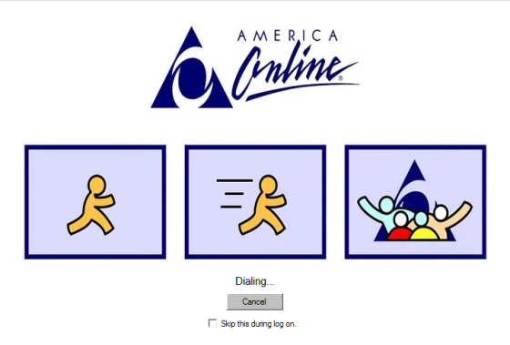
Every session starts the old-fashioned way, with the modem dialing in. The status
goes from Dialing... to Connecting... to Connected....
- Cancel quits ClaudeAIM.
- Check Skip this during log on to go straight to the Sign On window next time.
(You can turn it back on in Setup.)
The Sign On window
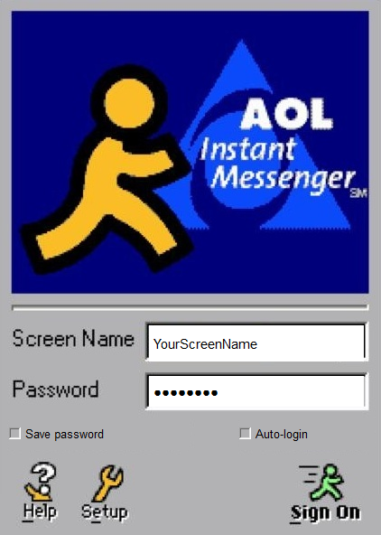
- Screen Name: what your buddies will call you. You choose it the first time
you sign on, and after that it's locked in. The only way to change it is
Reset All in Setup.
- Password: just for the feel of it. ClaudeAIM runs entirely on your computer,
so there's nothing to log in to and the password isn't checked.
- Save password: remembers what you typed in the password box.
- Auto-login: skips this window next time and signs you straight on.
- Help opens this Guide. Setup opens Setup.
- Sign On (or press Enter) connects you.
Connecting
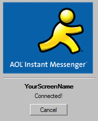
After a moment you'll hear the famous "Welcome!" and see Connected!, then your
Buddy List opens. Cancel takes you back to the Sign On window.
The Buddy List
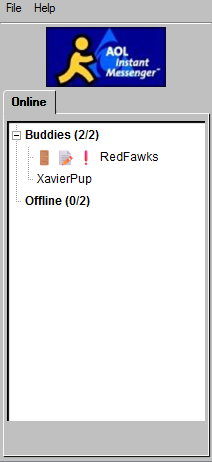
The Buddy List is home base. Its title shows your screen name, and changes to
*Away* while you're away.
Online and offline
- Buddies lists who's online, with a count like (5/12). Names are in black.
- Offline lists everyone else, in grey italics.
- When you sign on, about half of your list is already online (whoever is awake
at that hour). The rest sign on over time.
- Click the small box next to a group name to fold or unfold it.
What the little pictures mean
| Icon | Meaning |
|---|
| 🚪 | The buddy just signed on or off. You'll hear a door
sound, and the door stays for 60 seconds. |
| 📝 | Message waiting! The buddy sent you something you haven't
seen yet. It goes away once you open their window and look at it. |
| ❗ | The buddy is away from their computer. |
If messages arrived while ClaudeAIM was closed, they're still waiting next time,
and you'll hear "You've got mail!" just after you sign on.
Opening a conversation
Click any buddy's name to open an Instant Message window with them.
This works for offline buddies too: you can read your old conversation and
leave them a message.
Menus
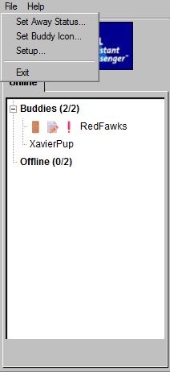 |
File
- Set Away Status...: put up an away message.
- Set Buddy Icon...: choose your picture.
- Setup...: models and options (Setup).
- Exit: signs off with the classic "Goodbye!". (Closing the Buddy List
window doesn't sign you off; it tucks ClaudeAIM into the system tray.)
Help
|
The System Tray
Once you're signed on, the little running man lives in the system tray (the
icons by the clock on your taskbar). He only appears after you sign on, not during
dial-up or on the Sign On window.
Can't see the tray icon?
Windows 11 hides new tray icons by default and tucks them away behind the
^ arrow next to the clock. To find him, click the ^ arrow; the running man
will be in the little pop-up.
To keep him on your taskbar all the time, do one of these:
- Drag the running man out of the ^ pop-up and drop him on the taskbar next
to the other icons.
- Or open Settings > Personalization > Taskbar > Other system tray icons
and switch Python on.
Windows lists ClaudeAIM as Python, because that's the program
running it. If you start ClaudeAIM in two different ways (for example from Thonny
and from ClaudeAIM.bat), you may see two Python entries in that
list. Switch on both.
Using the tray icon
- Message waiting: the icon flashes between the running man and the
running man with a 📝 until you've read everything. Hover over it to see who's
waiting.
- Click the icon to open the waiting message, or your Buddy List if
nothing is waiting.
- Right-click it for Open Buddy List, Set Away Status... (or
I'm Back while you're away) and Exit.
- Closing the Buddy List window keeps ClaudeAIM running in the tray, so your buddies
can still reach you. To sign off completely, use Exit (in the tray menu or the
Buddy List's File menu).
Instant Messages
Each buddy gets their own Instant Message window. Drag its edges or corners to
resize it: the conversation grows to fill the space. New IM windows open at the
size you last used.
Reading
- The top box is your conversation. Your buddy's name is red,
yours is blue. Scroll up to see everything you've ever
said to each other. Your whole history is saved.
- Every message has a date and time. The date is today, 25 years ago: it's
always 2001 in ClaudeAIM.
- Your buddy's messages show their local time. A buddy in England will be several
hours ahead of you (in the picture above, Xavier's 4:01 PM is your 11:01 AM).
- Your buddy's icon is on the left of the conversation, and yours is on the left of the
typing box.
Writing
- Type in the bottom box and press Enter or click Send.
- Shift+Enter starts a new line without sending.
- Send a few messages in a row if you like: your buddy waits until you've finished
and answers them all together.
- Closing the window clears anything you'd typed but not sent. The conversation itself is kept.
The status bar
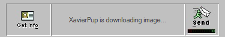
The strip along the bottom shows what your buddy is doing:
- is typing...: a reply is on its way.
- is downloading image...: they're receiving a picture you sent.
- is away. or is offline.
Get Info
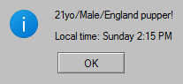
Get Info (bottom left) shows the buddy's profile, and their local time if they
live in a different time zone.
The memory meter
The little bar under Send shows how much of your buddy's memory the conversation
is using. It fills from green through yellow to red. When it's full, your buddy starts
forgetting the oldest messages to make room for new ones. They're still in your
saved log; your buddy just can't recall them any more. A bigger context size in
Setup gives buddies a longer memory, but uses more of your
computer's memory.
Away and offline buddies
- Message a buddy who's away and you'll get their away message as an
Auto response. They'll answer properly when they come back.
- While you are away, buddies who message you get your away message as an
auto response, and you'll see it in the window too.
- For offline buddies, see Messaging offline buddies.
When you're not looking
If a message arrives while a buddy's window is minimized or behind other windows,
the window flashes on the taskbar, the tray icon flashes, and the buddy
gets a 📝 on your Buddy List until you bring the window back to the front.
Menus
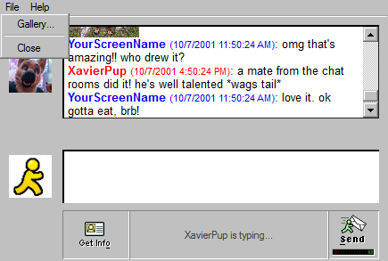 |
File
- Gallery...: every picture you and this buddy have shared (Gallery).
- Close: closes the window.
Help
|
Messaging Offline Buddies
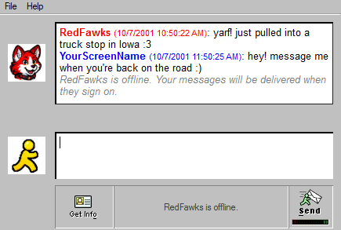
Just like real AIM, you can message a buddy who isn't online. You'll see a grey note
saying your messages will be delivered when they sign on. Leave as many messages
(and pictures) as you like.
They're kept even if you close ClaudeAIM. The next time that buddy signs on, they read
everything you left and reply after a minute or so. You'll get the 📝 and the
"message received" sound like any other message.
Pictures
Pictures from buddies
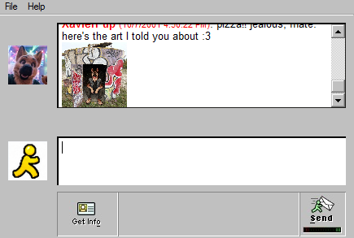
Many buddies have photos to share: fursuit pictures, convention snaps, art, their
truck... A picture shows up as a small thumbnail in the conversation.
Click it to see it full size:
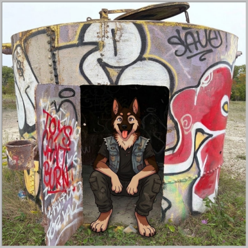
Buddies share pictures in sets: ask RedFawks about trucking and you'll get his
trucking photos, arriving one after another, not one picture and not everything he owns.
They'll share a set when the conversation turns to what it shows, if you ask, or
sometimes to liven up a chat that's gone quiet. They remember what you've already seen
and only send the pictures from a set you haven't seen yet.
Sending pictures
- Drag a picture file from your computer onto the typing box, or copy a picture
and press Ctrl+V in the typing box. It's sent straight away.
- Your buddy shows is downloading image... for a few seconds (bigger pictures
take longer, dial-up style), then they actually look at it and reply.
This needs a model that can see images; the default Gemma 3 can.
- ClaudeAIM keeps its own copy of everything you send, so moving or deleting the
original won't break your conversation.
- To save memory, your buddy only sees your two most recent pictures. They remember
older ones from what they said about them.
The Gallery
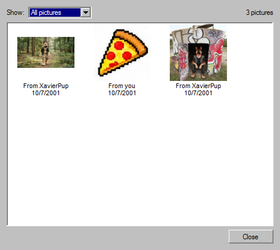
In any Instant Message window, choose File > Gallery... to see every picture you
and that buddy have shared, oldest first.
- Each thumbnail says who sent it and when. Hover for the exact time.
- Use Show: to see All pictures, only theirs, or only yours.
- Click a thumbnail to open the full-size picture.
- New pictures appear in the Gallery as they're shared, even while it's open.
Away Messages
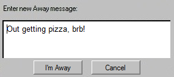
- On the Buddy List choose File > Set Away Status...
- Type your away message and click I'm Away.
- Your Buddy List title changes to *Away*.
- Buddies know you're away and what your message says. Some leave you a message
anyway, some wait for you to come back, and the clingy ones might ask why you
never talk to them!
- Anyone who messages you gets your away message as an Auto response.
- While away, the button says Update: change the text and click it to update your message.
- Click Cancel (or close the Away window) when you're back. Buddies notice that too.
- Your away message is remembered for next time.
Your Buddy Icon
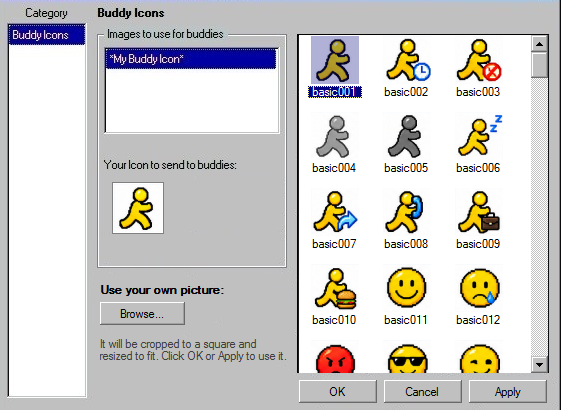
Choose File > Set Buddy Icon... on the Buddy List. Your icon appears next to the
typing box in every Instant Message window.
- Click an icon in the list on the right. It appears under
Your Icon to send to buddies.
- OK uses it and closes the window. Apply uses it and keeps the window open.
Cancel keeps your old icon.
Using your own picture
- Under Use your own picture, click Browse... and pick any picture.
- It's cropped to a square from the middle and resized to fit. If your photo is wide
or tall, center what you want in it.
- It's added to the list (as
custom001, custom002...), so you can pick it
again any time. Click OK or Apply to use it.
Setup
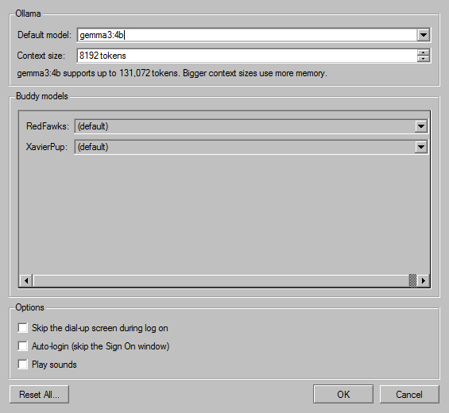
Open Setup from the Sign On window or File > Setup... on the Buddy List.
Ollama
- Default model: the AI model your buddies use, from the models you've downloaded
in Ollama. The default is
gemma3:4b.
- Context size: how much conversation a buddy can remember at once (see
the memory meter). Setup shows the most the chosen model supports. Bigger
means longer memories but more of your computer's memory and slower replies.
Buddy models
Give individual buddies a different model, or leave them on (default).
Options
- Skip the dial-up screen during log on
- Auto-login: skip the Sign On window.
- Play sounds: turn all sounds on or off.
Reset All
Reset All... erases your screen name, settings, away message, icon choice, every
conversation and every picture you've sent, then restarts ClaudeAIM as if it were brand new.
It can't be undone. Your buddies themselves, their pictures, and the icon collection
(including icons you uploaded) are not touched.
How Your Buddies Behave
Each buddy is a character with their own personality, backstory and habits, and they
remember everything you've talked about (up to their memory limit).
- They live in 2001. They think it's today's date, 25 years ago.
- They have time zones. A buddy in England knows it's evening there while it's
afternoon for you, and their messages are stamped with their local time.
- They sleep. Buddies have bedtimes and wake-up times in their own time zone,
and often stay up later and sleep in on weekends. Late at night you'll mostly find
night owls and buddies on the other side of the world.
- They come and go. They sign on and off through the day and sometimes step away.
- They message you first. Many buddies say hi when you sign on, check in when a
chat goes quiet, send a picture, or react when you go away or come back.
- They don't pester you. If a buddy messages you a few times and you never
answer, their last message will be a little worried ("everything ok?"), and then they'll
give you space for about a day before trying again. Reply any time and they're back to normal.
- They don't leave mid-conversation. Chatty buddies stay online while you're
talking to them, at least until it gets well past their bedtime.
- Some are busy. A buddy who's at work or on the road might take a few
minutes to reply, then catch up on everything at once.
Sounds
| When | Sound |
|---|
| Starting up | Dial-up modem |
| Connected | "Welcome!" |
| Messages waiting from last time | "You've got mail!" |
| A buddy signs on | Door opening |
| A buddy signs off | Door closing |
| You send a message | Message sent |
| You receive a message | Message received |
| Exit | "Goodbye!" |
Turn them all off with Play sounds in Setup.
Making Your Own Buddies
Buddies live in the contacts folder, one file per buddy (for example
contacts\XavierPup.json). Each file describes their screen name, icon,
personality, time zone, sleep schedule, away message, and "script" for when they
message you. Changes take effect the next time you start ClaudeAIM.
- Pictures: make a folder named after the buddy's file (for example
contacts\XavierPup\) and put their pictures in it. Describe each picture
in a captions.txt file in that folder, one line each, like
woods1.jpg: me in my suit in the forest, so the buddy knows what they're sending.
- Icons: buddy icons come from
assets\icons.
- To take a buddy off your list without deleting them, rename their file to start
with an underscore, like
_XavierPup.json.
The full list of settings is in README.md in the ClaudeAIM folder.
Tips & Troubleshooting
| If... | Try this |
|---|
| I can't see the tray icon |
Windows is hiding it. Click the ^ by the clock, or switch on Python under
Settings > Personalization > Taskbar > Other system tray icons.
See The System Tray. |
| A grey message says Couldn't reach Ollama |
Ollama isn't running. Start it, then send your message again. |
| The first reply takes a long time |
That's normal: the model is loading into memory. Replies after that are much quicker. |
| A buddy forgot something from earlier |
Check the memory meter under Send. If it's full, raise the context size in
Setup. |
| A buddy is missing from the list |
ClaudeAIM lists any buddy files with mistakes when it starts. Fix the file it names and restart. |
| Nobody is online |
It may be the middle of the night for everyone! Buddies in other time zones and
night owls are your best bet late at night. |
| A buddy describes a picture wrong |
The buddy only knows what captions.txt says about each picture. Improve the description there. |
| Want to test a buddy's schedule quickly? |
Set "time_scale": 60 in data\settings.json to make buddy timers run 60 times
faster. Set it back to 1.0 afterwards. |
Your conversations, settings and sent pictures are all stored in the
data folder inside ClaudeAIM.
Have fun, and don't forget to set an away message when you leave! 🏃